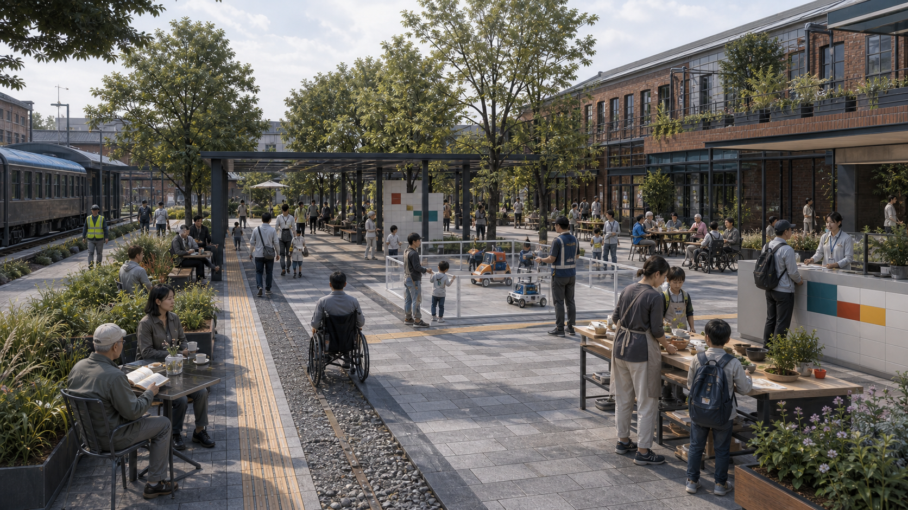
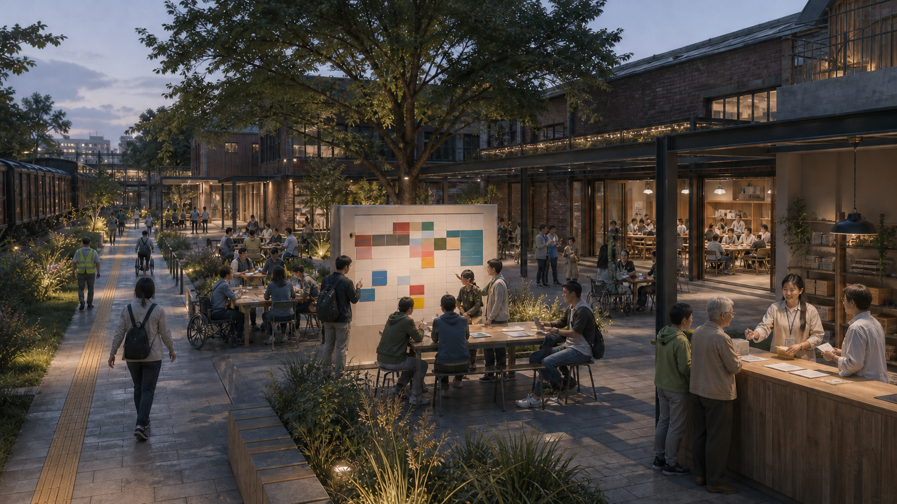
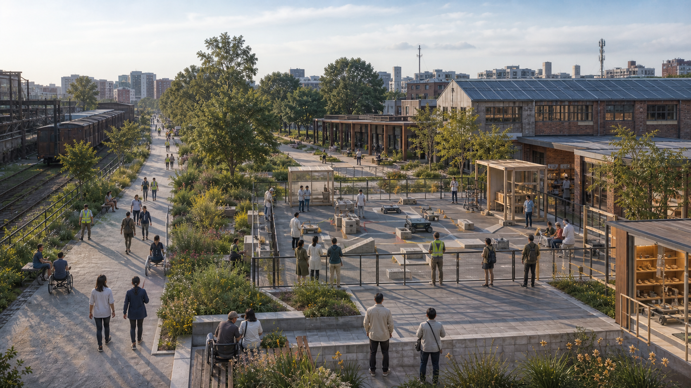

RIGHT 01 / NO FORCED AI
Equivalent non-AI service
Every live scenario must offer an equal staffed, telephone, or paper route. Without equivalent capacity, admission fails.
C2 · AO/DHL human gate · non-AI equivalence test →Turn one-off space allocation into a public timetable that is legible, rejectable, human-takeover ready, and returned on time; use m²·h / week to ask both how much space and how much time the public receives.

The relative clock starts at H000 only after applicable G/C gates and competent approvals pass. It is not an approved date or operating commitment.
Every live scenario must offer an equal staffed, telephone, or paper route. Without equivalent capacity, admission fails.
C2 · AO/DHL human gate · non-AI equivalence test →A model cannot sign or approve. Duty, data and access roles can pause a service and return it to a safe state.
H024 access baseline + H048 shadow mode →Stop reasons, site return, data deletion and appeal outcomes enter a public record. Incomplete evidence forbids expansion.
Independent PTC review · PRJ-08 failure archive →Three zones define public-time duties. Six booking segments govern conflicts and return. Seven components anchor time, stopping, access and evidence to place.
Start at the overall map and three nested scopes; follow space, AI scenarios, core metrics, sources and assumptions back to machine evidence. This is an index, not a self-awarded score.
Source: metrics.json. These are provisional design-geometry diagnostics, forbidden as statutory control, title or implementation approval. Operational outcomes remain unknown.
Maps, numbers, legends and protocols are generated deterministically from local data. Every provisional boundary is labelled, and every figure returns to GeoJSON, JSON or metrics.


The first four are bounded test-and-validation services; the other eight support public life and district operation. They are twelve independent admission contracts, not twelve aspirations.
Accountability is a set of veto, signature and recusal powers, not placeholder organisation names. Named institutions, legal mandate, budget, capacity and SLO remain pending.
Four text-free GPT Image 2 concepts explore material, scale and use. No map, geometry, number, protocol or statutory judgment is derived from them.



These entries cover space, operation, rights, implementation and review. Words and line styles duplicate every colour-coded state.
| Evidence pack | What it supports | Status | Local entry |
|---|---|---|---|
| Spatial locators | Three zones, six booking segments, seven components, twelve nodes and provisional geometry | Provisional design geometry | constraints.geojson |
| Weekly operating contract | Slots, states, human gates, non-AI baselines, stops and receipt fields | Design proposal | jz168-week.schema.json |
| First 168 Hours | Nine continuous H000–H168 stages: freeze, counters, baseline, shadow, tabletop, appeal, co-review, return and decision | Gated protocol | first-168h.json |
| Twelve scenario cards | Per-scenario data boundary, human accountability, equal route, SLO, stop and review | Outcomes unmeasured | scenario-cards.json |
| Governance RACI | Ten proposed roles separate schedule, admission, permission interface, operation, stopping, evaluation and appeal | Holders and authority pending | governance-raci.json |
| Nine renewal projects | Owners, resource gates, restoration actions, receipts and review cycles | Institutions and budget pending | renewal-projects.json |
| Seven-dimension review map | Primary evidence and open checks for every score dimension; no self-awarded score | Review index | review-evidence-map.json |
Each English locator is paired with its exact visible Chinese canonical from compliance_matrix.json.visual_sections. The requirement_id and stable anchor return all 64 locators to an existing overview, protocol or evidence card; this index adds no new factual claim.
Canonical source: compliance_matrix.json (23 requirements; 64 unique visual_sections). Every canonical Chinese label remains visible and carries a stable data-visual-section locator.